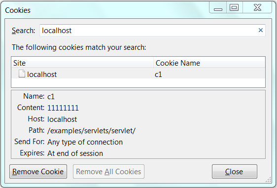
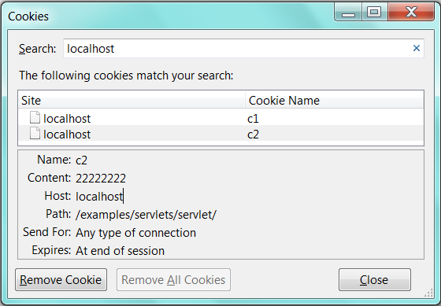

Tomcat provides a number of excellent servlet examples in "<CATALINA_HOME>\webapps\examples". The servlet source files are kept under "<CATALINA_HOME>\webapps\examples\WEB-INF\classes", together with the compiled classes. To run the examples, start Tomcat server. Issue URL http://localhost:8080/examples.
Let's study these examples. I made some modifications to suit my programming style.
Hello-world Example
Prints "Hello, world!" in response to a client's request.
HelloWorldExample.java
1 2 3 4 5 6 7 8 9 10 11 12 13 14 15 16 17 18 19 20 21 22 23 24 25 26 27 28 29 30 31 32 33 34 35 36 37 38 39 40 |
// To save as "<CATALINA_HOME>\webapps\helloservlet\WEB-INF\src\mypkg\HelloWorldExample.java" package mypkg; import java.io.*; import java.util.*; import javax.servlet.*; import javax.servlet.http.*; public class HelloWorldExample extends HttpServlet { @Override public void doGet(HttpServletRequest request, HttpServletResponse response) throws IOException, ServletException { // Set the response message's MIME type. response.setContentType("text/html;charset=UTF-8"); // Allocate a output writer to write the response message into the network socket. PrintWriter out = response.getWriter(); // Use a ResourceBundle for localized string in "LocalStrings_xx.properties" for i18n. // The request.getLocale() sets the locale based on the "Accept-Language" request header. ResourceBundle rb = ResourceBundle.getBundle("LocalStrings", request.getLocale()); // To test other locales. //ResourceBundle rb = ResourceBundle.getBundle("LocalStrings", new Locale("fr")); // Write the response message, in an HTML document. try { out.println("<!DOCTYPE html>"); // HTML 5 out.println("<html><head>"); out.println("<meta http-equiv='Content-Type' content='text/html; charset=UTF-8'>"); String title = rb.getString("helloworld.title"); out.println("<title>" + title + "</title></head>"); out.println("<body>"); out.println("<h1>" + title + "</h1>"); // Prints "Hello, world!" // Set a hyperlink image to refresh this page out.println("<a href='" + request.getRequestURI() + "'><img src='images/return.gif'></a>"); out.println("</body></html>"); } finally { out.close(); // Always close the output writer } } } |
Dissecting the "HelloWorldExample.java"
- We shall use the web context "
helloservlet" created earlier to deploy this servlet (Read "Create a new Webapp"). - Servlets have to be kept in a named package for deployment, instead of the default no-name package. I place this servlet in package
mypkg, and save as "<CATALINA_HOME>\webapps\helloservlet\WEB-INF\src\mypkg\HelloWorldExample.java". - Compile the servlet. Use
-doption (destination) to place the resultant class in directory "helloservlet\WEB-INF\classes\mypkg".D:...> cd \<CATALINA_HOME>\webapps\helloservlet\WEB-INF D:\<CATALINA_HOME>\webapps\helloservlet\WEB-INF> javac -d classes src\mypkg\HelloWorldExample.java
- This example supports locale text strings for i18n (internationalization). The
request.getLocale()is used to get the locale of the client, based on the "Accept-Language" request header sent by the client in the request message. We build aResourceBundleon property files "LocalStrings_xx.properties", wherexxare the locale language code. Copy all the "examples\WEB-INF\classes\LocalStrings_xx.properties" into "helloservlet\WEB-INF\classes". To try another locale, such as "fr", change therequest.getLocale()tonew Locale("fr"). A property file comprises "key=value" pairs. The message "Hello world!" is kept in a key called "helloworld.title". - For convenience, use single-quote for HTML tag attribute's value, instead of double quote which requires escape sequence
'\"'. - The example uses an image "
return.gif" as a hyperlink to refresh the page. Copy this image from "examples\servlets\images" into "helloservlet\images". We can get the URL of the current page viarequest.getRequestURI().
Write the Deployment Descriptor in "web.xml"
......
<servlet>
<servlet-name>TomcatHelloWorldExample</servlet-name>
<servlet-class>mypkg.HelloWorldExample</servlet-class>
</servlet>
......
......
<servlet-mapping>
<servlet-name>TomcatHelloWorldExample</servlet-name>
<url-pattern>/hello_example</url-pattern>
</servlet-mapping>
......
Run the Servlet
To run the servlet, issue URL http://localhost:8080/helloservlet/hello_example.
Request Information Example
Prints the request information in the request headers of the request message, such as protocol, method, uri, path info, and SSL cyber suites.
RequestInfoExample.java
// To save as "<CATALINA_HOME>\webapps\helloservlet\WEB-INF\src\mypkg\RequestInfoExample.java" package mypkg; import java.io.*; import java.util.*; import javax.servlet.*; import javax.servlet.http.*; import myutil.HtmlFilter; // Utilities public class RequestInfoExample extends HttpServlet { @Override public void doGet(HttpServletRequest request, HttpServletResponse response) throws IOException, ServletException { // Set the response message's MIME type response.setContentType("text/html;charset=UTF-8"); // Allocate a output writer to write the response message into the network socket PrintWriter out = response.getWriter(); // Use ResourceBundle to keep localized string in "LocalStrings_xx.properties" ResourceBundle rb = ResourceBundle.getBundle("LocalStrings", request.getLocale()); // Write the response message, in an HTML page try { out.println("<!DOCTYPE html"); // HTML 5 out.println("<html><head>"); out.println("<meta http-equiv='Content-Type' content='text/html; charset=UTF-8'>"); String title = rb.getString("requestinfo.title"); out.println("<head><title>" + title + "</title></head>"); out.println("<body>"); out.println("<h3>" + title + "</h3>"); // Tabulate the request information out.println("<table>"); out.println("<tr><td>" + rb.getString("requestinfo.label.protocol") + "</td>"); out.println("<td>" + request.getProtocol() + "</td></tr>"); out.println("<tr><td>" + rb.getString("requestinfo.label.method") + "</td>"); out.println("<td>" + request.getMethod() + "</td></tr>"); out.println("</td></tr><tr><td>"); out.println("<tr><td>" + rb.getString("requestinfo.label.requesturi") + "</td>"); out.println("<td>" + HtmlFilter.filter(request.getRequestURI()) + "</td></tr>"); out.println("<tr><td>" + rb.getString("requestinfo.label.pathinfo") + "</td>"); out.println("<td>" + HtmlFilter.filter(request.getPathInfo()) + "</td></tr>"); out.println("<tr><td>Path Translated:</td>"); out.println("<td>" + request.getPathTranslated() + "</td></tr>"); out.println("<tr><td>" + rb.getString("requestinfo.label.remoteaddr") + "</td>"); out.println("<td>" + request.getRemoteAddr() + "</td></tr>"); // SSL (HTTPS) Cipher suites String cipherSuite = (String)request.getAttribute("javax.servlet.request.cipher_suite"); if (cipherSuite != null) { out.println("<tr><td>SSLCipherSuite:</td>"); out.println("<td>" + cipherSuite + "</td></tr>"); } out.println("</table></body></html>"); } finally { out.close(); // Always close the output writer } } // Do the same thing for GET and POST requests @Override public void doPost(HttpServletRequest request, HttpServletResponse response) throws IOException, ServletException { doGet(request, response); } }
Dissecting the "RequestInfoExample.java"
- Similar to the previous example, we keep this servlet in a package
mypkg, and save the source file as "helloservlet\WEB-INF\src\mypkg\RequestInfoExample.java". AResourceBundlewas used to provide localized string labels retrieved from "LocalStrings_xx.properties". - In this example, a utility called
HtmlFilter(below) is used to filter the strings submitted by the client, inrequestUriandpathInfo. It replaces'<','>','"'and'&'by the HTML escape sequences "<", ">", """ and "&" respectively. This is to prevent malicious user from place program codes (such as JavaScript) into the request message (known as "Command Injection" attack). There is no needed to filterprotocolandmethodas they could not contain malicious codes.
myutil.HtmlFilter.java
// To save as "<CATALINA_HOME>\webapps\helloservlet\WEB-INF\src\myutil\HtmlFilter.java" package myutil; public final class HtmlFilter { /** * Filter the specified message string for characters that are sensitive * in HTML. This avoids potential attacks caused by including JavaScript * codes in the request URL that is often reported in error messages. */ public static String filter(String message) { if (message == null) return null; int len = message.length(); StringBuffer result = new StringBuffer(len + 20); char aChar; for (int i = 0; i < len; ++i) { aChar = message.charAt(i); switch (aChar) { case '<': result.append("<"); break; case '>': result.append(">"); break; case '&': result.append("&"); break; case '"': result.append("""); break; default: result.append(aChar); } } return (result.toString()); } }
Write the Deployment Descriptor in "web.xml"
...... <servlet> <servlet-name>TomcatRequestInfoExample</servlet-name> <servlet-class>mypkg.RequestInfoExample</servlet-class> </servlet> ...... ...... <servlet-mapping> <servlet-name>TomcatRequestInfoExample</servlet-name> <url-pattern>/request_info_example/*</url-pattern> </servlet-mapping> ......
Run the Servlet
- The URL mapping is "
/request_info_example/*". That is, it matches all sub-paths under "/request_info_example". - To understand the different between
getRequestURI(),getPathInfo(),getPathTranslated(), try these request URLs:http://localhost:8080/helloservlet/request_info_example http://localhost:8080/helloservlet/request_info_example/ http://localhost:8080/helloservlet/request_info_example/apple+orange http://localhost:8080/helloservlet/request_info_example/apple+orange?param=zzz http://localhost:8080/helloservlet/request_info_example/<apple+orange>?param=<zzz>
- To display the SSL cyber suites, you need to enable SSL in Tomcat (read "Tomcat with SSL"), and issue URL:
https://localhost:8443/helloservlet/request_info_example.
Request Headers Example
Prints the request headers in the request message sent by the client.
RequestHeaderExample.java
// To save as "<CATALINA_HOME>\webapps\helloservlet\WEB-INF\src\mypkg\RequestHeaderExample.java" package mypkg; import java.io.*; import java.util.*; import javax.servlet.*; import javax.servlet.http.*; import myutil.HtmlFilter; public class RequestHeaderExample extends HttpServlet { @Override public void doGet(HttpServletRequest request, HttpServletResponse response) throws IOException, ServletException { // Set the response message's MIME type response.setContentType("text/html;charset=UTF-8"); // Allocate a output writer to write the response message into the network socket PrintWriter out = response.getWriter(); // Use ResourceBundle to keep localized string in "LocalStrings_xx.properties" ResourceBundle rb = ResourceBundle.getBundle("LocalStrings", request.getLocale()); // Write the response message, in an HTML page try { out.println("<!DOCTYPE html"); // HTML 5 out.println("<html><head>"); out.println("<meta http-equiv='Content-Type' content='text/html; charset=UTF-8'>"); String title = rb.getString("requestheader.title"); out.println("<head><title>" + title + "</title></head>"); out.println("<body>"); out.println("<h3>" + title + "</h3>"); // Display all the request headers from the request message out.println("<table>"); Enumeration e = request.getHeaderNames(); while (e.hasMoreElements()) { String headerName = (String)e.nextElement(); String headerValue = request.getHeader(headerName); out.println("<tr><td>" + HtmlFilter.filter(headerName) + "</td>"); out.println("<td>" + HtmlFilter.filter(headerValue) + "</td></tr>"); } out.println("</table></body></html>"); } finally { out.close(); // Always close the output writer } } // Do the same thing for GET and POST requests @Override public void doPost(HttpServletRequest request, HttpServletResponse response) throws IOException, ServletException { doGet(request, response); } }
Dissecting the "RequestHeaderExample.java"
- Recall that
request headersare name-value pairs. This example usesrequest.getHeaderNames()to retrieve all the header names and stored in aEnumeration. It then usesrequest.getHeader(headerName)to retrieve the value of each of the header name. - Again, it uses the
HtmlFilterto replace special characters, to prevent command injection.
Deployment Descriptor in "web.xml"
......
<servlet>
<servlet-name>TomcatRequestHeaderExample</servlet-name>
<servlet-class>mypkg.RequestHeaderExample</servlet-class>
</servlet>
......
<servlet-mapping>
<servlet-name>TomcatRequestHeaderExample</servlet-name>
<url-pattern>/request_header_example</url-pattern>
</servlet-mapping>
Request Parameter Example
RequestParamExample.java
1 2 3 4 5 6 7 8 9 10 11 12 13 14 15 16 17 18 19 20 21 22 23 24 25 26 27 28 29 30 31 32 33 34 35 36 37 38 39 40 41 42 43 44 45 46 47 48 49 50 51 52 53 54 55 56 57 58 59 60 61 62 63 64 65 66 67 68 69 70 71 72 73 74 |
// To save as "<CATALINA_HOME>\webapps\helloservlet\WEB-INF\src\mypkg\RequestParamExample.java" package mypkg; import java.io.*; import java.util.*; import javax.servlet.*; import javax.servlet.http.*; import myutil.HtmlFilter; public class RequestParamExample extends HttpServlet { @Override public void doGet(HttpServletRequest request, HttpServletResponse response) throws IOException, ServletException { // Set the response message's MIME type response.setContentType("text/html;charset=UTF-8"); // Allocate a output writer to write the response message into the network socket PrintWriter out = response.getWriter(); // Use ResourceBundle to keep localized string in "LocalStrings_xx.properties" ResourceBundle rb = ResourceBundle.getBundle("LocalStrings", request.getLocale()); // Write the response message, in an HTML page try { out.println("<!DOCTYPE html"); // HTML 5 out.println("<html><head>"); out.println("<meta http-equiv='Content-Type' content='text/html; charset=UTF-8'>"); String title = rb.getString("requestparams.title"); out.println("<head><title>" + title + "</title></head>"); out.println("<body>"); out.println("<h3>" + title + "</h3>"); // Display the request parameters. Trim and discard empty string. out.println(rb.getString("requestparams.params-in-req") + "<br />"); boolean noParam = true; String firstName = request.getParameter("firstname"); if (firstName != null && (firstName = firstName.trim()).length() != 0) { out.println(rb.getString("requestparams.firstname")); out.println(" = " + HtmlFilter.filter(firstName) + "<br />"); noParam = false; } String lastName = request.getParameter("lastname"); if (lastName != null && (lastName = lastName.trim()).length() != 0) { out.println(rb.getString("requestparams.lastname")); out.println(" = " + HtmlFilter.filter(lastName)); noParam = false; } if (noParam) { out.println(rb.getString("requestparams.no-params")); } out.println("<br /><br />"); // Display a form to prompt user for parameters. // Use default "action" to the current page out.println("<form method='get'>"); out.println(rb.getString("requestparams.firstname")); out.println("<input type='text' name='firstname'><br />"); out.println(rb.getString("requestparams.lastname")); out.println("<input type='text' name='lastname'><br />"); out.println("<input type='submit' value='SEND'>"); out.println("</form></body></html>"); } finally { out.close(); // Always close the output writer } } // Do the same thing for GET and POST requests @Override public void doPost(HttpServletRequest request, HttpServletResponse response) throws IOException, ServletException { doGet(request, response); } } |
Dissecting the "RequestParamExample.java"
- I use "GET" method to inspect the query string in the URL. Use "POST" method for production.
- No "
action" attribute is specified in the<form>tag. The default "action" is the current page. - The query string comprising
name=valuepairs (URL-encoded).request.getParameter(name)can be used to retrieve thevalueof the parametername. It returnsnullif the parameter is not present in the query string. It returns the first value if multiple values present. - It is a good practice to trim the leading and trailing white spaces of the request parameter values.
Deployment Descriptor in "web.xml"
<servlet>
<servlet-name>TomcatRequestParamExample</servlet-name>
<servlet-class>mypkg.RequestParamExample</servlet-class>
</servlet>
.......
<servlet-mapping>
<servlet-name>TomcatRequestParamExample</servlet-name>
<url-pattern>/request_param_example</url-pattern>
</servlet-mapping>
To understand the purpose of HtmlFilter, try removing the filter and putting a JavaScript or program codes in the request. Also try to send a large chunk of data.
Cookies Example
Demonstrates cookies. Read "HTTP state and session management" to understand cookie.
CookieExample.java
// To save as "<CATALINA_HOME>\webapps\helloservlet\WEB-INF\src\mypkg\CookieExample.java" package mypkg; import java.io.*; import java.util.*; import javax.servlet.*; import javax.servlet.http.*; import myutil.HtmlFilter; public class CookieExample extends HttpServlet { @Override public void doGet(HttpServletRequest request, HttpServletResponse response) throws IOException, ServletException { // Set the response message's MIME type response.setContentType("text/html;charset=UTF-8"); // Allocate a output writer to write the response message into the network socket PrintWriter out = response.getWriter(); // Use ResourceBundle to keep localized string in "LocalStrings_xx.properties" ResourceBundle rb = ResourceBundle.getBundle("LocalStrings", request.getLocale()); // Write the response message, in an HTML page try { out.println("<!DOCTYPE html"); // HTML 5 out.println("<html><head>"); out.println("<meta http-equiv='Content-Type' content='text/html; charset=UTF-8'>"); String title = rb.getString("cookies.title"); out.println("<head><title>" + title + "</title></head>"); out.println("<body>"); out.println("<h3>" + title + "</h3>"); // Display the cookies returned by the client Cookie[] cookies = request.getCookies(); if ((cookies != null) && (cookies.length > 0)) { out.println(rb.getString("cookies.cookies") + "<br />"); for (Cookie cookie : cookies) { out.println("Cookie Name: " + HtmlFilter.filter(cookie.getName()) + "<br />"); out.println("Cookie Value: " + HtmlFilter.filter(cookie.getValue()) + "<br />"); } } else { out.println(rb.getString("cookies.no-cookies") + "<br />"); } out.println("<br />"); // Create a new cookie if cookiename and cookievalue present in the request String cookieName = request.getParameter("cookiename"); if (cookieName != null) cookieName = cookieName.trim(); String cookieValue = request.getParameter("cookievalue"); if (cookieValue != null) cookieValue = cookieValue.trim(); if (cookieName != null && !cookieName.equals("") && cookieValue != null && !cookieValue.equals("")) { Cookie cookie = new Cookie(cookieName, cookieValue); response.addCookie(cookie); out.println(rb.getString("cookies.set") + "<br />"); out.print(rb.getString("cookies.name") + " " + HtmlFilter.filter(cookieName) + "<br />"); out.print(rb.getString("cookies.value") + " " + HtmlFilter.filter(cookieValue)); } out.println("<br /><br />"); // Display a form to prompt the user to create a new cookie out.println(rb.getString("cookies.make-cookie") + "<br />"); out.print("<form method='get'>"); out.print(rb.getString("cookies.name")); out.println("<input type='text' name='cookiename'><br />"); out.print(rb.getString("cookies.value")); out.println("<input type='text' name='cookievalue'><br />"); out.println("<input type='submit' value='SEND'>"); out.println("</form></body></html>"); } finally { out.close(); // Always close the output writer } } // Do the same thing for GET and POST requests @Override public void doPost(HttpServletRequest request, HttpServletResponse response) throws IOException, ServletException { doGet(request, response); } }
Deployment Descriptor in "web.xml"
<servlet>
<servlet-name>TomcatCookieExample</servlet-name>
<servlet-class>mypkg.CookieExample</servlet-class>
</servlet>
......
<servlet-mapping>
<servlet-name>TomcatCookieExample</servlet-name>
<url-pattern>/cookie_example</url-pattern>
</servlet-mapping>
Run the Servlet
- Issue URL
http://localhost:8080/helloservlet/cookie_example. In the very first request, no cookie is sent from the client to the server, as no cookie has been set. - Create a new cookie "
c1=1111111", and submit. The server create a new cookie "c1=1111111" and send to the client. The client stores this new cookie. Firefox cookie manager shows the cookie:  - Create the second cookie "
c2=22222222", and submit. In this request, the previous cookie "c1=11111111" is sent together with the request. The server create the second cookie "c2=22222222" and send to the client. The client stores this cookie. The firefox cookie manager shows: 
Session Example
SessionExample.java
// To save as "<CATALINA_HOME>\webapps\helloservlet\WEB-INF\src\mypkg\SessionExample.java" package mypkg; import java.io.*; import java.util.*; import javax.servlet.*; import javax.servlet.http.*; import myutil.HtmlFilter; public class SessionExample extends HttpServlet { @Override public void doGet(HttpServletRequest request, HttpServletResponse response) throws IOException, ServletException { // Set the response message's MIME type response.setContentType("text/html;charset=UTF-8"); // Allocate a output writer to write the response message into the network socket PrintWriter out = response.getWriter(); // Use ResourceBundle to keep localized string in "LocalStrings_xx.properties" ResourceBundle rb = ResourceBundle.getBundle("LocalStrings", request.getLocale()); // Write the response message, in an HTML page try { out.println("<!DOCTYPE html"); // HTML 5 out.println("<html><head>"); out.println("<meta http-equiv='Content-Type' content='text/html; charset=UTF-8'>"); String title = rb.getString("sessions.title"); out.println("<head><title>" + title + "</title></head>"); out.println("<body>"); out.println("<h3>" + title + "</h3>"); // Return the existing session if there is one. Otherwise, create a new session HttpSession session = request.getSession(); // Display session information out.println(rb.getString("sessions.id") + " " + session.getId() + "<br />"); out.println(rb.getString("sessions.created") + " "); out.println(new Date(session.getCreationTime()) + "<br />"); out.println(rb.getString("sessions.lastaccessed") + " "); out.println(new Date(session.getLastAccessedTime()) + "<br /><br />"); // Set an attribute (name-value pair) if present in the request String attName = request.getParameter("attribute_name"); if (attName != null) attName = attName.trim(); String attValue = request.getParameter("attribute_value"); if (attValue != null) attValue = attValue.trim(); if (attName != null && !attName.equals("") && attValue != null && !attValue.equals("") ) { // synchronized session object to prevent concurrent update synchronized(session) { session.setAttribute(attName, attValue); } } // Display the attributes (name-value pairs) stored in this session out.println(rb.getString("sessions.data") + "<br>"); Enumeration names = session.getAttributeNames(); while (names.hasMoreElements()) { String name = (String) names.nextElement(); String value = session.getAttribute(name).toString(); out.println(HtmlFilter.filter(name) + " = " + HtmlFilter.filter(value) + "<br>"); } out.println("<br />"); // Display a form to prompt user to create session attribute out.println("<form method='get'>"); out.println(rb.getString("sessions.dataname")); out.println("<input type='text' name='attribute_name'><br />"); out.println(rb.getString("sessions.datavalue")); out.println("<input type='text' name='attribute_value'><br />"); out.println("<input type='submit' value='SEND'>"); out.println("</form><br />"); out.print("<a href='"); // Encode URL by including the session ID (URL-rewriting) out.print(response.encodeURL(request.getRequestURI() + "?attribute_name=foo&attribute_value=bar")); out.println("'>Encode URL with session ID (URL re-writing)</a>"); out.println("</body></html>"); } finally { out.close(); // Always close the output writer } } // Do the same thing for GET and POST requests @Override public void doPost(HttpServletRequest request, HttpServletResponse response) throws IOException, ServletException { doGet(request, response); } }
Deployment Descriptor in "web.xml"
<servlet>
<servlet-name>TomcatSessionExample</servlet-name>
<servlet-class>mypkg.SessionExample</servlet-class>
</servlet>
......
<servlet-mapping>
<servlet-name>TomcatSessionExample</servlet-name>
<url-pattern>/session_example</url-pattern>
</servlet-mapping>
Running the Servlet
Issue URL http://localhost:8080/helloservlet/session_example. The first access create a HttpSession object, with a unique session ID (jsessionId).
By default, HttpSession uses cookie to exchange the jsessionid. The firefox cookie manager shows the following cookie. Take note that the value of the jsessionid is the same as the HttpSession's getId().
The method response.encodeURL(url) can be used to re-write the URL to include the session ID. Try the hyperlink.
More Examples
[TODO]
REFERENCES & RESOURCES
- Java Servlets Home Page @ http://java.sun.com/products/servlet. Servlet Developers @ http://java.net/projects/servlet/.
- Java Servlet 2.2, 2.3, 2.4, 2.5, 3.0 API Specifications.
- Apache Tomcat Server @ http://tomcat.apache.org.
- RFC2616 "Hypertext Transfer Protocol HTTP 1.1", W3C, June 1999.
- HTML 4.01 Specification, W3C Recommendation, 24 Dec 1999 @ http://www.w3.org/TR/html401, and HTML 5 Draft Specification @ http://www.w3.org/TR/html5.
- The Java EE 6 Tutorial, Chapter 10 Java Servlet Technology, December 2009 @ http://java.sun.com/javaee/6/docs/tutorial/doc/bnafd.html.
- The Java EE 5 Tutorial, Chapter 4 Java Servlet Technology, October 2008 @ http://java.sun.com/javaee/5/docs/tutorial/doc/bnafd.html.
- The J2EE 1.4 Tutorial, Chapter 11 Java Servlet Technology, December, 2005 @ http://java.sun.com/j2ee/1.4/docs/tutorial/doc/.
- The J2EE 1.3 Tutorial "Java Servlet Technology" @ http://java.sun.com/j2ee/tutorial/1_3-fcs/doc/Servlets.html.
- Java EE 6 Technologies @ http://www.oracle.com/technetwork/java/javaee/tech/index-jsp-142185.html.
- Java EE 5 Technologies @ http://www.oracle.com/technetwork/java/javaee/tech/javaee5-jsp-135162.html.
- Marty Hall, "Core Servlets and JavaServer Pages", vol.1 (2nd eds, 2003) and vol. 2 (2nd eds, 2006), Prentice Hall.
- java.net - The Source for Java Technology Collaboration @ http://www.java.net.